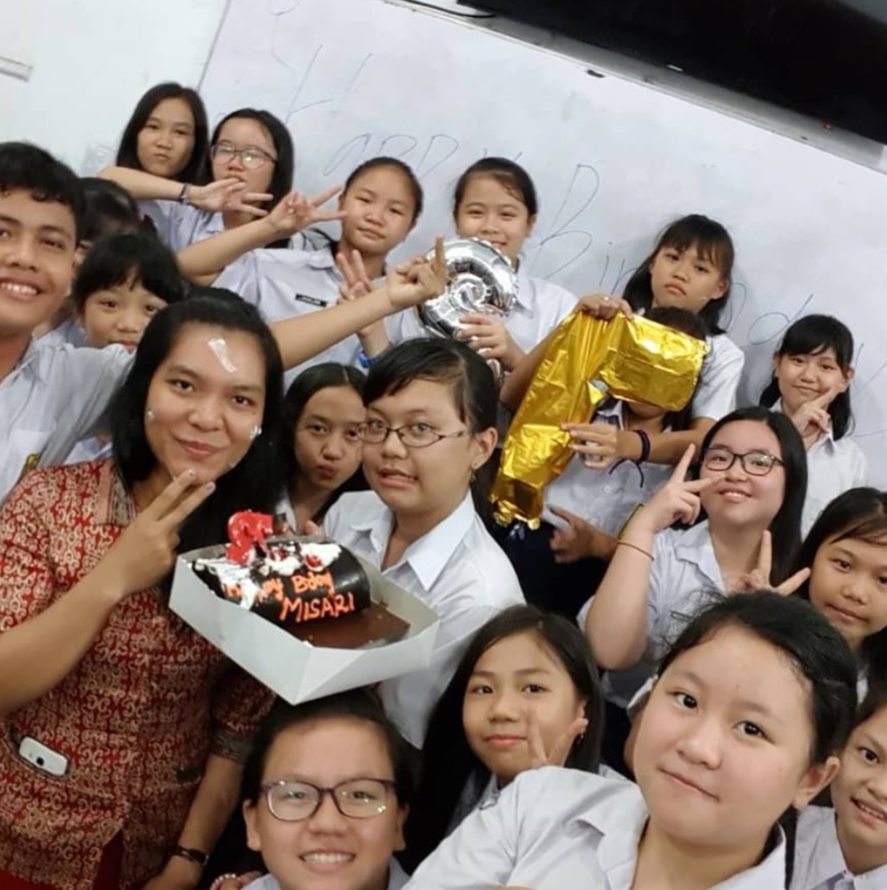

Selamat Datang di Destinasi Pertama, Tahun 2018
October 16, 2018
Percaya gak? Ternyata ini tahun kita bertemu pertama kalinya. Nggak terasa cepat banget waktu berlalu dan sekarang udah
akhir 2023 aja. Udah 5 tahun sejak kita mulai kenalan. Waktu itu lu yang ajak bicara duluan. Ya ... kalau boleh jujur agak random
ya cara ajak bertemannya. Biasanya orang lain malu-malu, tapi lu malah dengan akrabnya narik tangan w untuk main bareng.
W masih ingat, waktu itu jam olahraga di teladan. W lagi bicara sama Jesslyn eh, tiba-tiba aja ada yang pegang tangan w.
But that's cute. Kalau lu nggak begitu, bisa-bisa kita nggak temenan sampai sekarang. Sejak itu kita mulai dekat dan main
bareng, kayak udah kenal lama aja gitu. Karena memang udah akrab meski baru kenal.